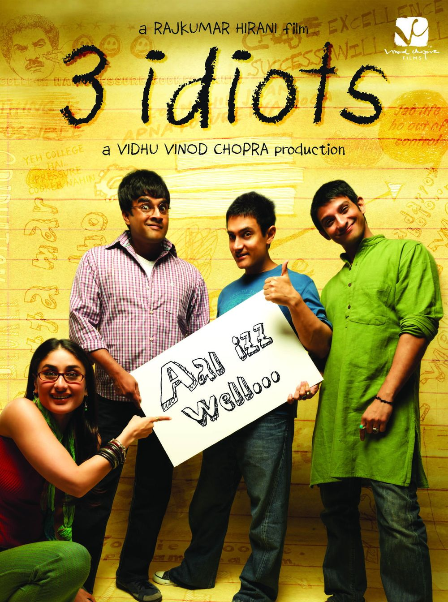

I'm from Andhra Pradesh, India. I have completed my bachelors from National Institute of Technology, Rourkela in the field of Metallurgical and Material Sciences. I have been part of various clubs during my graduation like Chef's Club, Chess Club and Aasra foundation. I have been actively involved and organised the fests in our college where people from all over India vists. After my graduation I have worked for a company called Jindal Stainless Limited. I worked as a associate manager for 2 years. I always wanted to pursue masters in USA. Finally my dream to pursue masters in one of the finest colleges has come true.
This movie is about the 3 friends how they lead their graduation and choose their own path of success. I mainly like the message that is given by the lead character that no one should take tension about anything in their life and should think peacefully on how to solve the issues. The main dialouge in the movie that attracts all the audiences is "ALL IS WELL".
